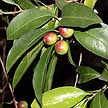
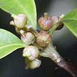
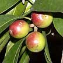
Nyatoh
Pouteria liggensis |
|
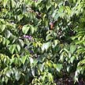
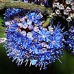
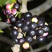
Delek
air
Memecylon edule |
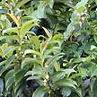
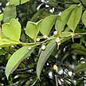
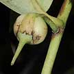
Tiup-tiup
Adinandra dumosa |
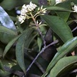
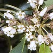
Belalang
puak
Pittosporum ferrugineum |
| Tree
(about 5m). Leaves thin. Flowers tiny (1cm) cream coloured. Fruits
oval, green ripening to purple. Rare. Seen on Chek Jawa and Lazarus
Island. It is Critically Endangered. |
Tree
(about 4m). Leaves leathery thin. Flowers small, brown, woolly on
the outside. Fruits globular with a thin skin, when ripe, splitting
to reveal a bright red and pulpy aril. Rarely seen, several can be
found on Chek Jawa, Pulau Ubin. It is Critically Endangered. |
Tree
(3-6m). Leaves leathery (8-12cm). Flowers small, bright blue, many
in a cluster. Fruit globular, green ripening to pinkish then black.
Rarely seen, several can be found on Chek Jawa, Pulau Ubin. It is
Endangered. |
Shrub
to tree (2-10m). Leaves (5-10cm long) leathery, dark green above and
pale beneath. Flowers small, cream, petals do not open. Fruits small
globular berries (cm). On rocky cliffs, also inland. Common. |
Shrub
or small tree (10m). Leaves small, narrow, pointed, leaf edge very
wavy. Flowers yellowish white in clusters. Fruit in compact clusters
of 4-12, ripening orange ochre, splittiing to reveal scarlet mass
of pulpy seeds. Uncommon |
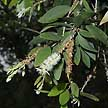
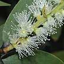
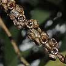 Gelam
Melaleuca cajuputi |
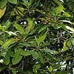
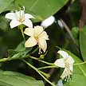
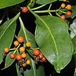 Tembusu
Fagraea fragrans |
|
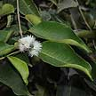
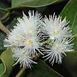
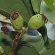
Sea apple
Syzygium grande |
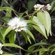
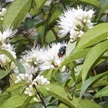
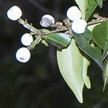
Kelat nasi nasi
Syzygium zeylanicum |
| Tree
(15-20m) narrow, dense crown. Leaves (5-9cm) with 5-7 longitudinal
veins resembling Acacia. Tiny flowers on a long spike, fruits woody
capsules in tight clusters. Trunk gnarled, twisted with thick spongy
bark that peel off. Planted at some of our coastal parks. |
Tree
(30-40m) U-shaped angular branches. Deeply fissured bark. Leaves (5-8cm).
Flowers (2cm) creamy white, trumpet shaped in clusters. Berries (1cm)
green to orange then red. Slow growing. Planted in many parks. Wild
ones sometimes seen on our natural cliffs. |
Tree
(to 18m). Coppery appearance. Leaves (15-25cm) upward pointing, young
leaves coppery beneath. Flowers tiny (less than 1cm) greenish white.
Fruits small (1-1.2cm) oval. Bark ridged, fissured but not flaky,
with low, sharp spreading buttresses. Common in coastal forests, rocky
shores, cliffs and sandy shores. |
Tree
(to 30m). Leaves shiny, leathery (12-18cm) with distinctly downturned
tip, opposite. No stipules and no latex. Flowers white pom-pom like,
mass flowering, in clusters. Fruits oblong to spherical (1.5-4cm)
green. Bark greyish, shallowly fissured, somewhat flaky. Wild on some
shores, widely planted roadside tree. |
Bush
or short tree (less than 10m). Leaves leathery, oval with pointed
tip. Young leaves purple pink. Puffy white inflorescence very short
and dense (2cm or less). Fruit small (less than 1cm) oblong, white
and pithy, appearing in bunches Wild on some natural cliffs on our
shores. |